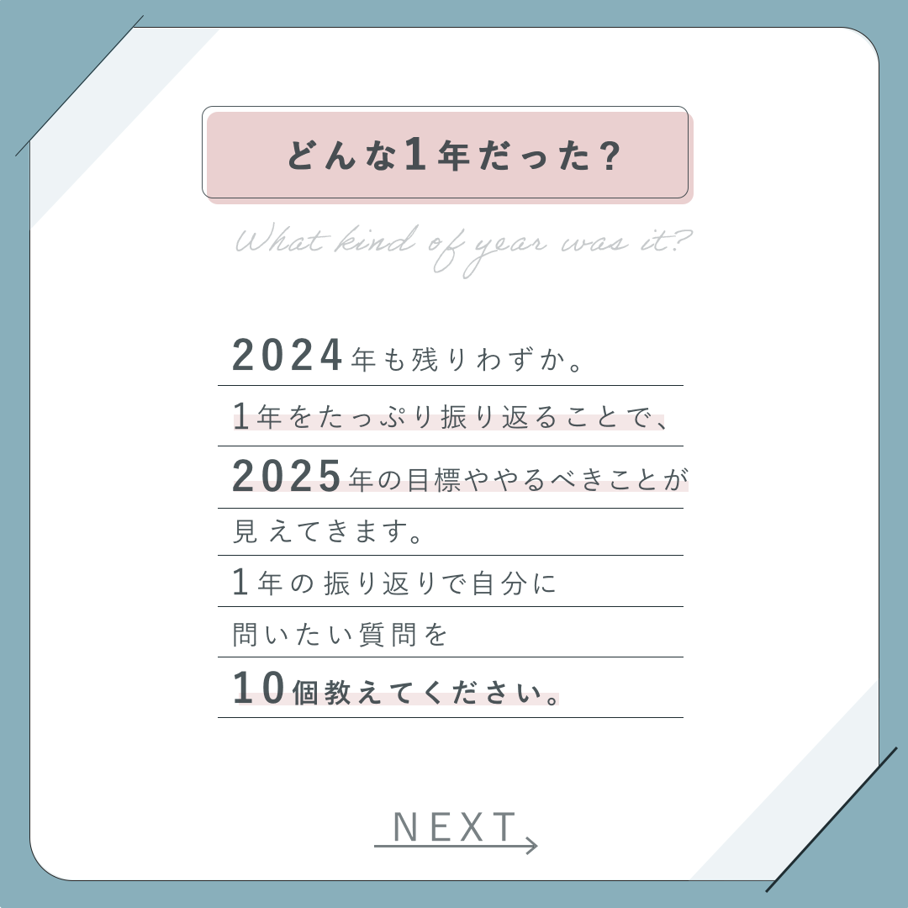
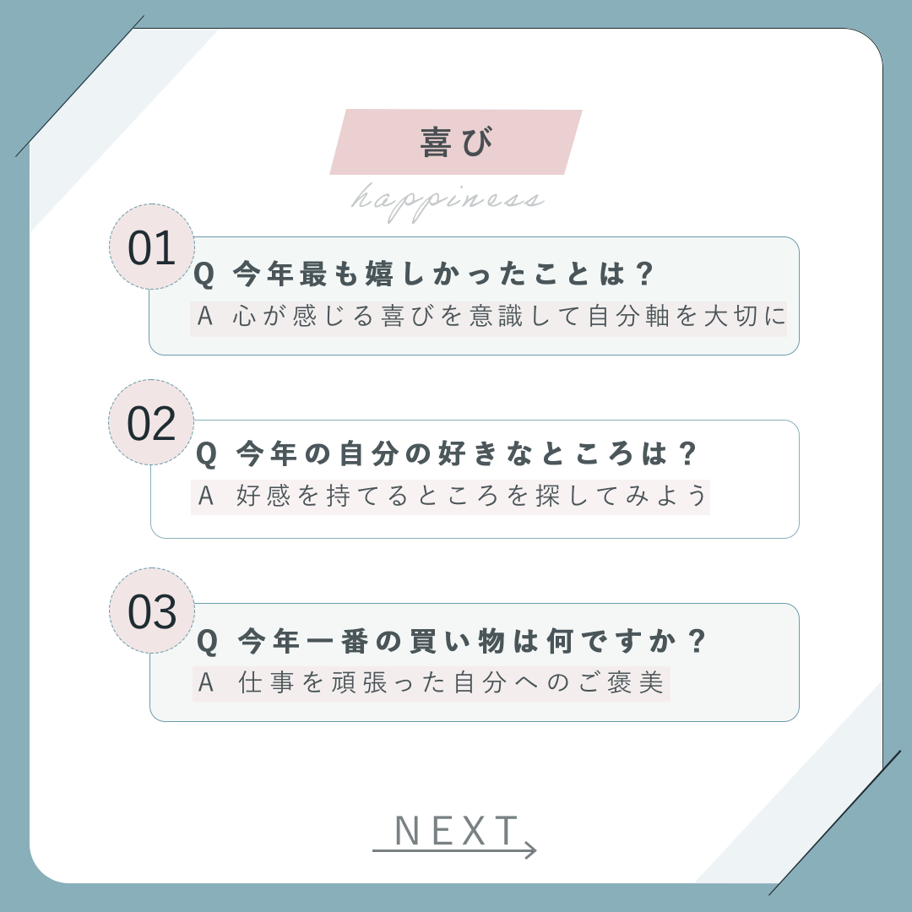
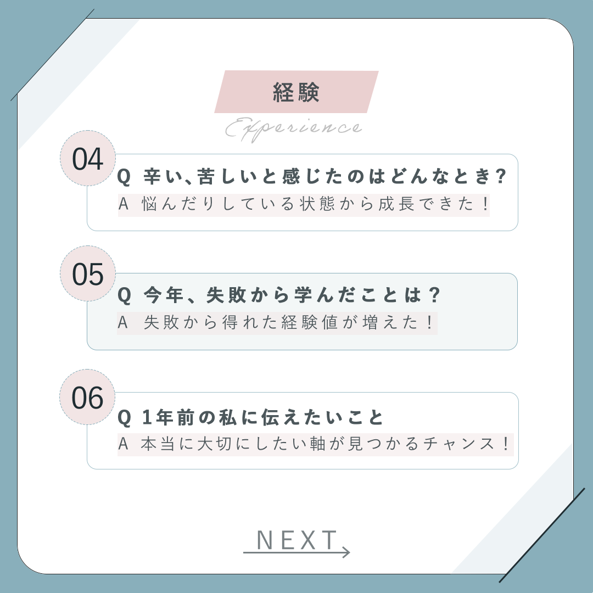
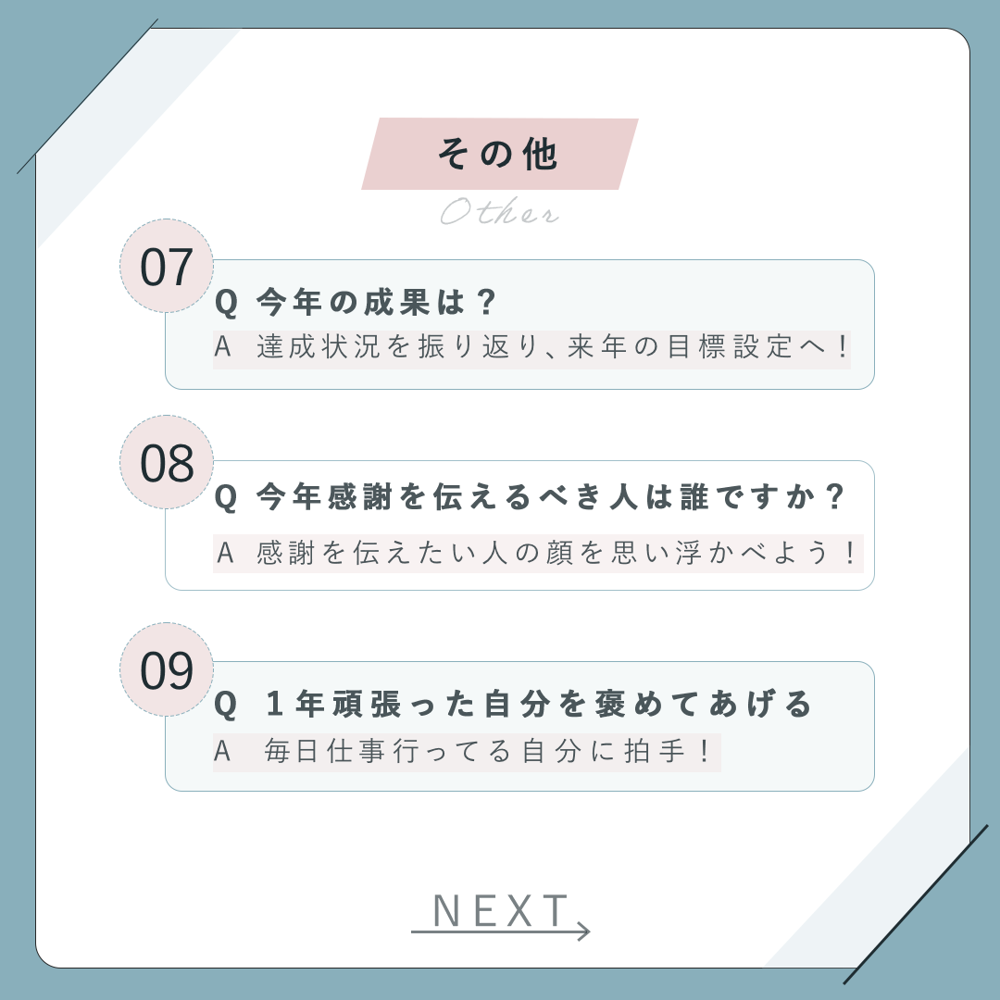
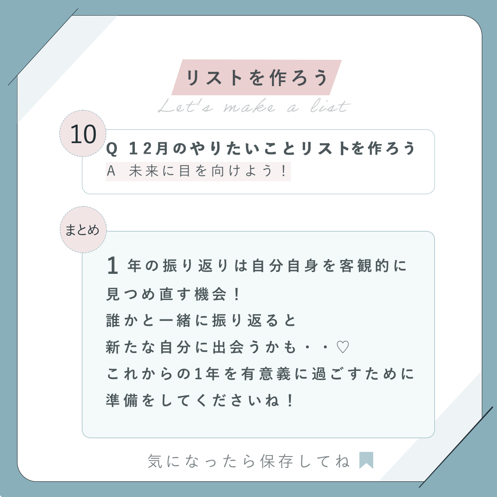

年末年始は多くの人が「今年の振り返り」や「来年の目標づくり」を考えるタイミング。
しかし、漠然と振り返ろうとしてもテーマが定まらず、自己分析や目標設定につなげにくいという課題がある。
また、SNS上では流し読みされやすいため、問いかけの形式で「自分ごと化」してもらえる工夫が必要だった。
「Q&A形式」でユーザーが考えやすく、自分に置き換えながらスクロールして楽しめる構成に。
「喜び・経験・その他・リスト化」とテーマごとに分け、ステップ形式で回答を導きやすくした。
淡いブルーとピンクを基調にし、余白を活かしたレイアウトで温かみを表現。年末の内省にふさわしい落ち着いた雰囲気を演出。
各スライドに「NEXT」ボタンを設置し、シリーズとして最後まで読み進めてもらえるように誘導。
「気になったら保存してね」と添えることで、SNSでの保存・拡散行動につながるよう設計。




